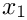

Goal
The primary goal of Example 6: Introduce TimeStepControl is to introduce Tempus::TimeStepControl while preserving the same Thyra::ModelEvaluator-based van der Pol model, the same Tempus::SolutionHistory, the same Tempus::StepperForwardEuler, the same simple tabular output, and the same application-managed time loop used in Example 5: Introduce Stepper.
Tempus::TimeStepControl manages timestep-size selection independently of the stepper. This allows timestep policy to be changed without changing the stepping algorithm itself.
New concepts introduced are:
- Tempus::TimeStepControl
- manages timestep-size selection and related integration limits
- the default Tempus::TimeStepControlStrategy is for constant timestep size (i.e., Tempus::TimeStepControlStrategyConstant)
setFinalTime(...)- sets the final integration time
setNumTimeSteps(...)- sets the number of time steps for constant-timestep control
initialize()- completes setup of the timestep-control object
setNextTimeStep(...)- determines the timestep metadata for the next step using the Tempus::SolutionHistory
timeInRange(...)- checks whether the current time remains within the control limits
indexInRange(...)- checks whether the current step index remains within the control limits
This is the first step in separating timestep-size control from the application-managed time loop. Rather than hardcoding a timestep size in the example, the application now delegates that choice to a dedicated Tempus control object.
What stays the same
- The van der Pol model is still provided by a Thyra::ModelEvaluator.
- The application still manages the overall time loop directly.
- The application still manages the Tempus::SolutionHistory.
- The Forward Euler step is still performed by Tempus::StepperForwardEuler.
- The output table still reports the step index, time,


- The regression check remains a separate final comparison.

Selected code excerpts
The code excerpts below highlight the main changes needed to replace hardcoded timestep selection with Tempus::TimeStepControl.
Construct and initialize TimeStepControl
Create and initialize a TimeStepControl. The application now constructs a Tempus::TimeStepControl and initializes it with the final time and number of time steps used for constant-timestep control. For the constant-timestep strategy (i.e., Tempus::TimeStepControlStrategyConstant), one can specify the number of time steps and the final time, and Tempus::TimeStepControl will internally determine the timestep size.
Before
After
This introduces a dedicated Tempus object for timestep-size control.
Replace hardcoded timestep selection
Use TimeStepControl to set the next timestep. Instead of assigning a hardcoded timestep size in the application, the control object now determines the next timestep metadata using the current solution history and the current integrator status.
Before
After
The time loop is still application-controlled, but timestep selection now comes from a dedicated Tempus control object.
Use TimeStepControl in the loop condition
Use TimeStepControl to enforce integration limits. The application now queries the control object to determine whether the current time and current step index remain in range.
Before
After
The loop is still managed by the application, but the integration limits now come from Tempus::TimeStepControl.
As in the updated examples, final tutorial success is determined after the loop by combining the final state status with the separate regression test.
How to compare the examples
A more detailed comparison can be made by diffing:
examples/05_Intro_Stepper/05_Intro_Stepper.cppexamples/06_Intro_TimeStepControl/06_Intro_TimeStepControl.cpp
From the packages/tempus directory, a focused comparison of the main time-integration logic between these two examples can be generated locally in bash or zsh with:
This ignores leading header lines (e.g., #include statements and Doxygen comments) and trailing regression-testing lines.